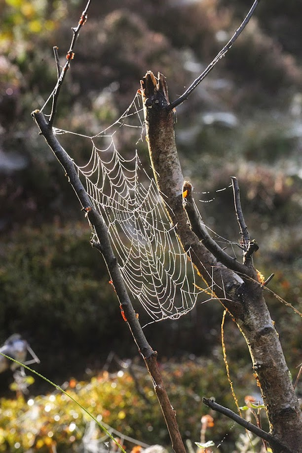

<div class="aim">
    <div>
        <p class="bold">Our aim</p>
        <p>The Friends of Lenzie Moss is a voluntary association dedicated to conserving the Moss for the benefit of present and future generations by all possible means: through education, liaison with official bodies, and appropriate environmental management.</p>
        <p>Details of recent activities and work on Lenzie Moss can be found in our Home page.</p>
        <p>Find out what we do and what we have been working on to help preserve Lenzie Moss.</p>
        <p>Download an overview <a href="../../assets/documents/about/aboutus.pdf" download="aboutus.pdf">here</a></p>
    </div>
    
</div>
